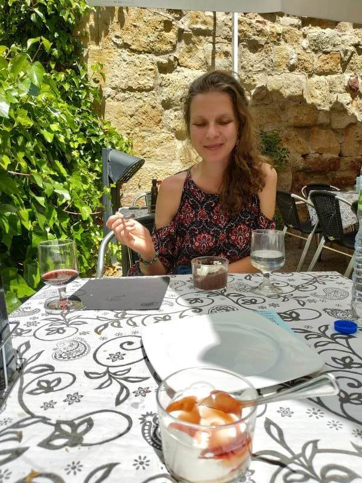

Chapter 3 3

Figure 3.1: Arrival in Salamanca. Enjoying the beauty of the city and the rivers.

Figure 3.2: Panoramic of the historic bridge over the river and the mysterious fluff that fell from the trees like snow.

Figure 3.3: Us on the historic bridge, with the main cathedral of Salamanca in the background

Figure 3.4: Makeshift skatepark outside a dissused church. People have been worshipping here for almost 2 decades. 12 years ago Robin was one of them!

Figure 3.5: Peaceful 3 course meal in the hidden terreza of the famous Don Quijote cafe.


Figure 3.6: Casa de las Conchas, famous historic building in the old city that houses the public library.